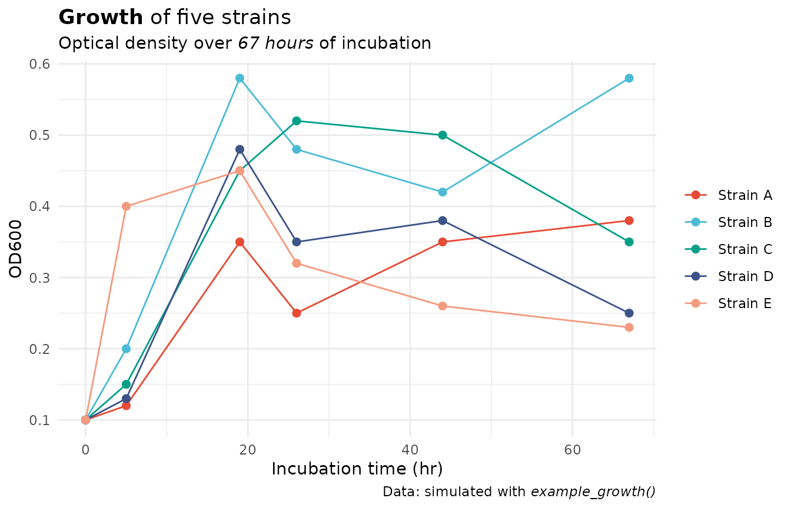
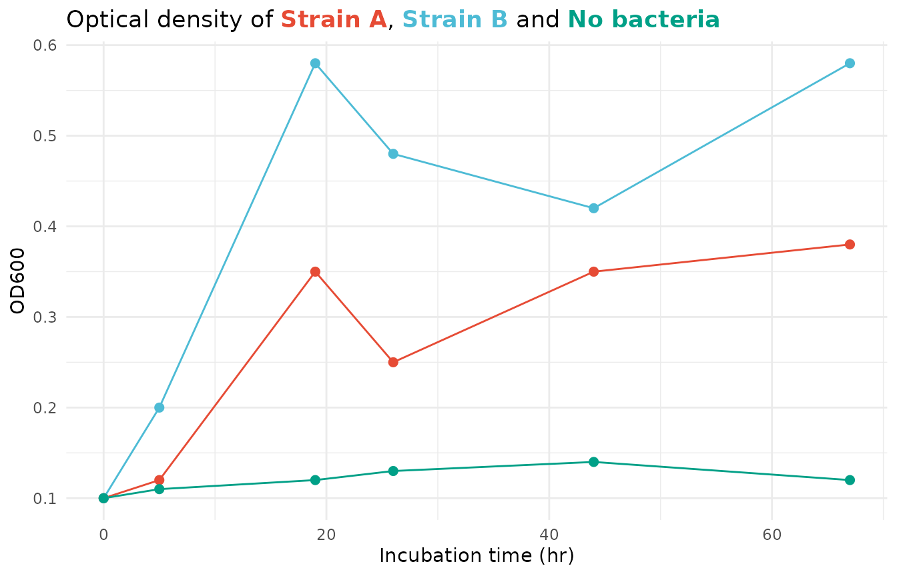
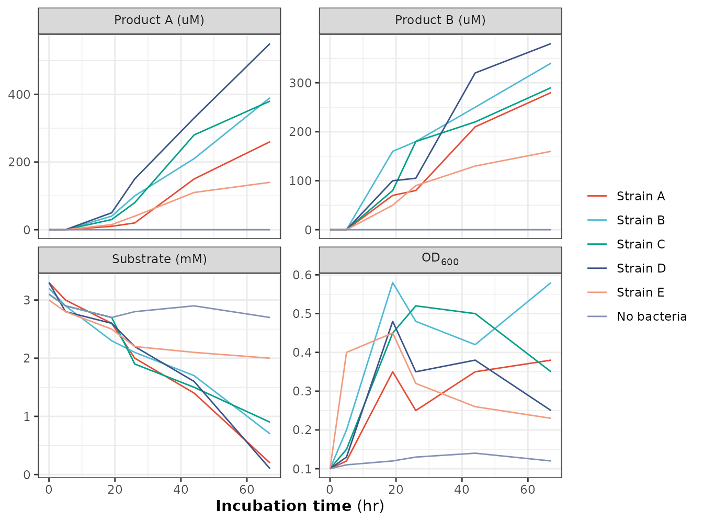
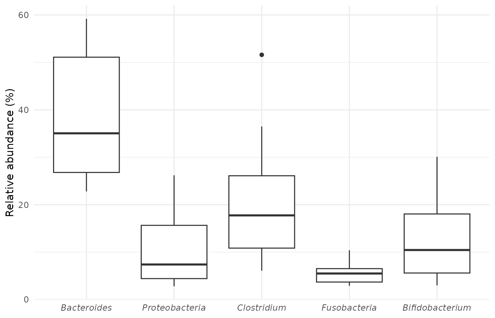
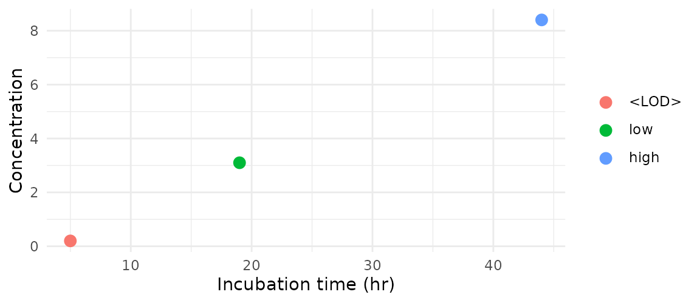
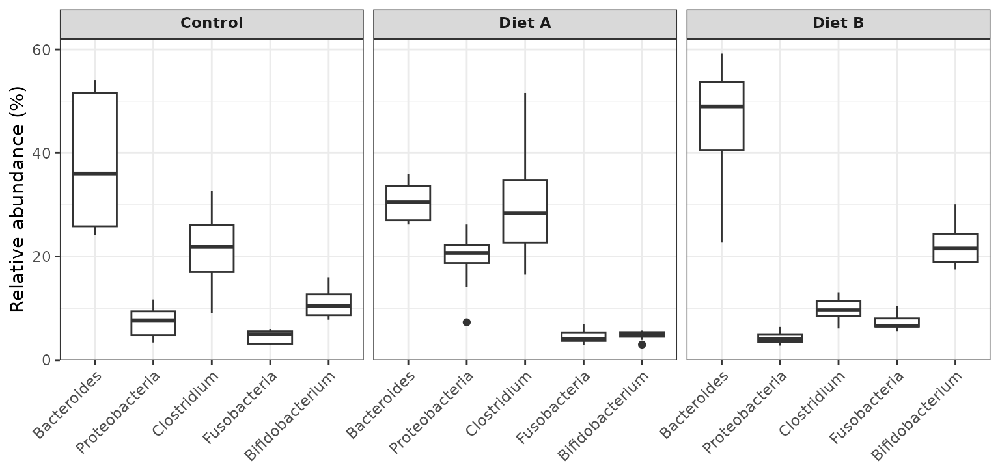
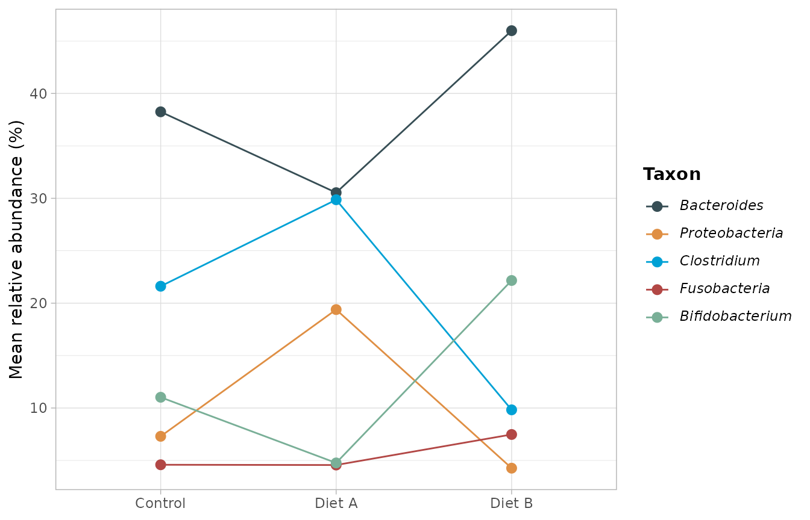
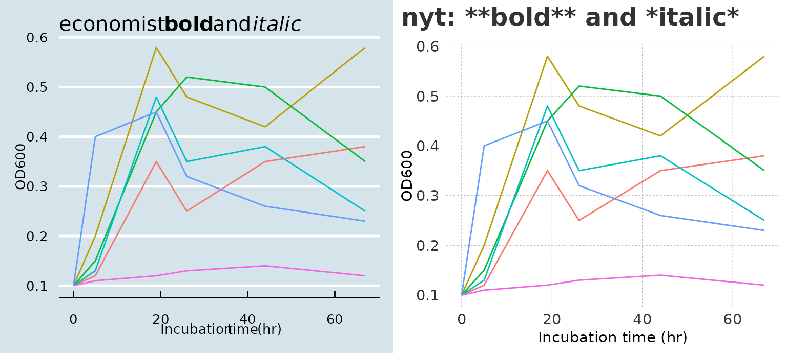

library(ggplot2)
library(themeset)
growth <- example_growth()
od <- subset(growth, measure == "OD600")
taxa <- example_taxa()Overview
By default ggplot2 prints text exactly as you type it, so
"**bold**" shows its asterisks. The ggtext package can render
markdown, and a small part of HTML, in plot text through
element_markdown(). The md_theme_*() functions
of themeset are the eight base ggplot2 themes with their
text elements switched over to it:
The text elements that understand markdown are the plot title, subtitle and caption, the x axis title, the legend title, and the facet strips above the panels. Tick labels, the labels of a legend, and text that the theme rotates (the y axis title and the strips on the side of a facet grid) stay plain text; sections 3 and 5 explain why and how to switch them on for a plot.
Only the way the text is drawn changes. Sizes, alignment, margins and
colors are those of the theme that is wrapped, and arguments are passed
on, so md_theme_minimal(base_size = 14) works like
theme_minimal(base_size = 14). The font face is plain, even
for themes whose own titles are bold, so that emphasis comes from the
markup you add.
The examples use the simulated data of example_growth()
and example_taxa().
1. Emphasis in Titles
Use **double asterisks** for bold and
*single asterisks* for italics:
ggplot(subset(od, strain != "No bacteria"), aes(time, value, color = strain)) +
geom_line() +
geom_point(size = 2) +
scale_color_npg() +
labs(
title = "**Growth** of five strains",
subtitle = "Optical density over *67 hours* of incubation",
caption = "Data: simulated with *example_growth()*",
x = "Incubation time (hr)", y = "OD600", color = NULL
) +
md_theme_minimal()
2. Colored Words Instead of a Legend
Inline HTML works as well. A <span> with a
style can color any part of a text, which makes it possible
to let the title do the job of the legend. Here the colors are taken
from the same scale that colors the lines, so they always match:
strains <- c("Strain A", "Strain B", "No bacteria")
npg <- substr(scale_color_npg()$palette(3), 1, 7) # drop the alpha channel
spans <- sprintf("<span style='color:%s'>**%s**</span>", npg, strains)
title <- sprintf("Optical density of %s, %s and %s", spans[1], spans[2], spans[3])
ggplot(subset(od, strain %in% strains), aes(time, value, color = strain)) +
geom_line() +
geom_point(size = 2) +
scale_color_npg() +
labs(title = title, x = "Incubation time (hr)", y = "OD600") +
md_theme_minimal() +
theme(legend.position = "none")
3. Axis Titles, Units and Subscripts
The x axis title is markdown-enabled, and so are the strips above the
panels. In the figure the x title has a bold part, and the strip labels
use <sub> for the subscript in OD600.
<sup> gives exponents in the same way:
growth_labels <- as_labeller(function(x) sub("OD600", "OD<sub>600</sub>", x, fixed = TRUE))
ggplot(growth, aes(time, value, color = strain)) +
geom_line() +
facet_wrap(vars(measure), scales = "free_y", labeller = growth_labels) +
scale_color_npg() +
labs(x = "**Incubation time** (hr)", y = NULL, color = NULL) +
md_theme_bw()
Rotated Text
The y axis title and the strips on the side of a facet grid are
rotated. When a plot is drawn at low resolution on the standard
png() devices, ggtext can drop the spaces between the words
of rotated text, so that a title reads “Milesper gallon”. The wrappers
therefore leave rotated text as plain text. The problem does not occur
with the ragg device (which ggsave() uses when the package
is installed) or when the plot is drawn at 192 dpi or more.
If you draw with one of those, you can use markup in the y axis title
by switching the element for the plot:
theme(axis.title.y = ggtext::element_markdown()).
Tick Labels
Tick labels stay plain text on purpose. They come from your data
rather than from text you wrote, and there can be hundreds of them.
Reading each one as markdown is slower, and a label such as
<LOD> or *** would be taken for markup
and make the plot fail.
When you do want markup in the tick labels of one plot, switch the
element for that plot. Complete themes define the elements of the bottom
and left axes explicitly, so those are the ones to name:
axis.text.x.bottom and axis.text.y.left. Taxon
names, for example, are set in italics:
ggplot(taxa, aes(taxon, abundance)) +
geom_boxplot() +
scale_x_discrete(labels = paste0("*", levels(taxa$taxon), "*")) +
labs(x = NULL, y = "Relative abundance (%)") +
md_theme_minimal() +
theme(axis.text.x.bottom = ggtext::element_markdown())
Supported Markup
ggtext renders a limited set of markdown and HTML:
| Markup | Result |
|---|---|
**bold**, *italic*
|
Bold and italic text |
<b>, <i>
|
The same, as HTML |
<span style='color:#E64B35'> |
Colored text; font-size works in the same way |
<sup>, <sub>
|
Exponents and indices |
<br> |
A line break (a plain \n is read as a space) |
Backticks, ~~strikethrough~~, <a>
links |
Not supported: the plot fails to draw with the error “gridtext has encountered a tag that isn’t supported yet” |
Labels That Come From Your Data
The facet labels are read as markdown, and so are the legend labels
once you switch them on (section 5). Both are usually values from your
data. A level that looks like markup, such as <LOD>
(below the limit of detection) or *, makes the plot fail.
Escape the characters in the scale’s labels with a
backslash:
detection <- data.frame(
time = c(5, 19, 44),
value = c(0.2, 3.1, 8.4),
level = factor(c("<LOD>", "low", "high"), levels = c("<LOD>", "low", "high"))
)
ggplot(detection, aes(time, value, color = level)) +
geom_point(size = 3) +
scale_color_discrete(labels = c("\\<LOD\\>", "low", "high")) +
labs(x = "Incubation time (hr)", y = "Concentration", color = NULL) +
md_theme_minimal() +
theme(legend.text = ggtext::element_markdown())
HTML entities work too (<LOD>). A theme
without markdown, such as theme_minimal(), needs no
escaping at all.
4. Facet Labels
The strip labels of a facet are markdown-enabled. Pass a labeller that adds the markup:
conditions <- as_labeller(function(x) paste0("**", x, "**"))
ggplot(taxa, aes(taxon, abundance)) +
geom_boxplot() +
facet_wrap(vars(condition), labeller = conditions) +
guides(x = guide_axis(angle = 45)) +
labs(x = NULL, y = "Relative abundance (%)") +
md_theme_bw()
5. Italic Legend Labels
Taxon names are conventionally set in italics. The title of the legend is markdown already; the labels of the legend are plain text by default, so switch the element on for the plot:
ggplot(taxa, aes(condition, abundance, color = taxon, group = taxon)) +
stat_summary(fun = mean, geom = "line") +
stat_summary(fun = mean, geom = "point", size = 2.5) +
scale_color_jama(labels = paste0("*", levels(taxa$taxon), "*")) +
labs(x = NULL, y = "Mean relative abundance (%)", color = "**Taxon**") +
md_theme_light() +
theme(legend.text = ggtext::element_markdown())
The labels stay plain by default for a reason beyond the markup characters in data. ggtext measures the labels of a continuous color bar in units that depend on the size of the canvas, so with markdown legend labels the bar of a heatmap grows with the figure it is drawn into and can overflow its panel. Switch the labels on only for a plot with a discrete legend.
6. Theme Sets and Markdown
Markdown is not limited to the md_theme_*() functions.
44 of the 49 theme sets are built from markdown-enabled themes, so
apply_theme_set() renders markup in titles, legend titles
and facet strips as well. The five exceptions are nyt,
midnight, royal, deepblue and
solid; they show the markup characters literally:
p <- ggplot(od, aes(time, value, color = strain)) +
geom_line() +
labs(x = "Incubation time (hr)", y = "OD600")
cowplot::plot_grid(
apply_theme_set(p, "economist") +
ggtitle("economist: **bold** and *italic*") +
theme(legend.position = "none"),
apply_theme_set(p, "nyt") +
ggtitle("nyt: **bold** and *italic*") +
theme(legend.position = "none"),
ncol = 2
)
Summary
| To get | Use |
|---|---|
| Bold or italic text |
**bold** and *italic* in
labs(), scale labels or labellers |
| Colored words | <span style='color:#E64B35'>word</span> |
| Exponents and indices |
<sup> and <sub> in a title,
the x axis title or a strip label |
| Markup in the y axis title |
theme(axis.title.y = ggtext::element_markdown()), with
ragg or at 192 dpi or more |
| Markup in tick labels |
theme(axis.text.x.bottom = ggtext::element_markdown()),
or axis.text.y.left
|
| Markup in the labels of a discrete legend | theme(legend.text = ggtext::element_markdown()) |
| A label that looks like markup | Escape it: "\\<LOD\\>"
|
| A markdown-enabled base theme |
md_theme_gray(), md_theme_bw(), … |
| Markdown in a theme set | any set except nyt, midnight,
royal, deepblue and solid
|